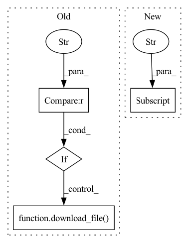

Pattern ID :16724
Before Change
Load the sentence piece tokenizer specified in the yaml file
save_model_path = os.path.join(hparams["save_folder"], "tokenizer.model")
if "tokenizer_file" in hparams :
download_file(
source=hparams["tokenizer_file"],
dest=save_model_path,
replace_existing=True,
)
// Defining tokenizer and loading it
tokenizer = spm.SentencePieceProcessor()
tokenizer.load(save_model_path)After Change
// Defining tokenizer and loading it
// To avoid mismatch, we have to use the same tokenizer used for LM training
tokenizer = hparams["lm_model"] .tokenizer
// 2. Define audio pipeline:
@sb.utils.data_pipeline.takes("wav")In pattern: SUPERPATTERN
Frequency: 3
Non-data size: 4
Instances Fragment ID: 55973278
Project Name: speechbrain/speechbrain
Commit Name: e264326bf979aceca6256467aa2f1b03ad527bb3
Time: 2021-01-30
Author: mirco.ravanelli@gmail.com
File Name: recipes/LibriSpeech/ASR/transducer/train/train.py
M Class Name: AnonimousClass
N Class Name: AnonimousClass
M Method Name: dataio_prepare(1)
N Method Name: dataio_prepare(1)
M Parent Class:
N Parent Class:
M File Name: recipes/LibriSpeech/ASR/transducer/train/train.py
N File Name: recipes/LibriSpeech/ASR/transducer/train/train.py
M Start Line: 298
M End Line: 345
N Start Line: 284
N End Line: 321
Before Change
replace_existing=True,
)
if "tok_voc_file" in hparams :
download_file(
source=hparams["tok_voc_file"],
dest=save_vocab_path,
replace_existing=True,
)
tokenizer = hparams["tokenizer"]()
grap all the .txt files for transcriptsAfter Change
if run_opts["distributed_launch"]:
train_sampler = torch.utils.data.distributed.DistributedSampler(
datasets["train"] ,
num_replicas=torch.distributed.get_world_size(),
rank=run_opts["local_rank"],
shuffle=False, Fragment ID: 55973279
Project Name: speechbrain/speechbrain
Commit Name: b57129aa5ffdb25ebaddbe3b6d8904bf0486cdad
Time: 2021-01-11
Author: jzhong9@u.rochester.edu
File Name: recipes/LibriSpeech/LM/experiment.py
M Class Name: AnonimousClass
N Class Name: AnonimousClass
M Method Name: data_io_prepare(2)
N Method Name: data_io_prepare(1)
M Parent Class:
N Parent Class:
M File Name: recipes/LibriSpeech/LM/experiment.py
N File Name: recipes/LibriSpeech/LM/experiment.py
M Start Line: 76
M End Line: 183
N Start Line: 72
N End Line: 171
Before Change
hparams["save_folder"], "{}_unigram.model".format(hparams["vocab_size"])
)
if "tokenizer_file" in hparams :
download_file(
source=hparams["tokenizer_file"],
dest=save_model_path,
replace_existing=True,
)
// Defining tokenizer and loading it
tokenizer = spm.SentencePieceProcessor()
tokenizer.load(save_model_path)After Change
// We get the tokenizer as we need it to encode the labels when creating
// mini-batches.
tokenizer = hparams["tokenizer"]
// 2. Define audio pipeline:
@sb.utils.data_pipeline.takes("wav")
@sb.utils.data_pipeline.provides("sig") Fragment ID: 55973277
Project Name: speechbrain/speechbrain
Commit Name: 931fd7784eee735f9cfbfc6753dd87c9f53c1506
Time: 2021-03-07
Author: parcollet.titouan@gmail.com
File Name: recipes/LibriSpeech/ASR/transformer/train/train.py
M Class Name: AnonimousClass
N Class Name: AnonimousClass
M Method Name: dataio_prepare(1)
N Method Name: dataio_prepare(1)
M Parent Class:
N Parent Class:
M File Name: recipes/LibriSpeech/ASR/transformer/train/train.py
N File Name: recipes/LibriSpeech/ASR/transformer/train/train.py
M Start Line: 322
M End Line: 335
N Start Line: 307
N End Line: 307